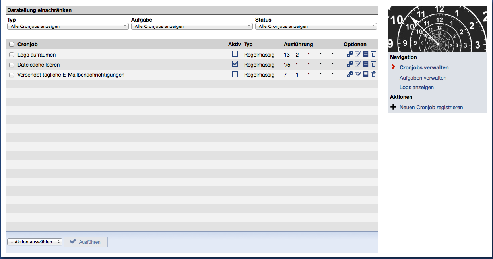
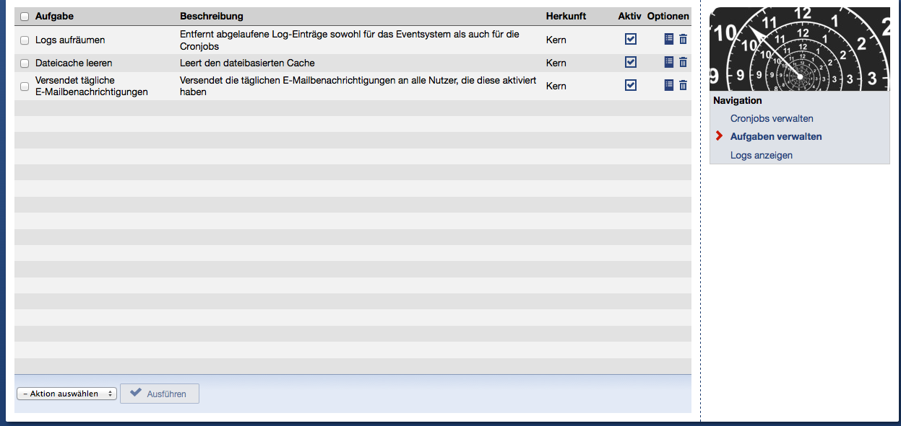

Cronjobs in Stud.IP
Vorstellung und Einführung
Von Jan-Hendrik Willms
(Universität Oldenburg)
Stud.IP-Entwicklertagung 2013
„ Bezeichung für automatisierte Aufgaben in einem Unix/Linux-System, die zu bestimmten
Zeiten wiederholt werden können. ”
Anwendungsgebiete in Stud.IP
- Versenden der täglichen Benachrichtigungsmails
- Garbage Collector (Cache, Logs)
Aktuelle Situation (2.3)
- Einzelne Skripte im
/cli-Ordner
- Cronjobs müssen von Hand auf der Konsole (de)aktiviert werden
- Keine globale Verwaltung
- Kein einheitliches Logging
- Keine Unterstützung für Plugins
Neue Situation (2.4)
- „One cronjob to rule them all“
- Globale Verwaltung
- Einheitliches Logging
- Unterstützung für Plugins
„One cronjob to rule them all“
-
Cronjobs werden von einem einzelnen Skript gesteuert:
/cli/cronjob-worker.php
-
Einzelne Cronjobs können quasi beliebig platziert werden
Aktivieren, Deaktivieren und Löschen von Cronjobs

Hinzufügen von Cronjobs
Parameter
Hinzufügen von Cronjobs
Regelmässig
Hinzufügen von Cronjobs
Einmalig
Aktivieren, Deaktivieren und Löschen von Aufgaben

Übersicht aller Logeinträge
Logs einsehen - Erfolgreich
Logs einsehen - Fehlerhaft
Begriffsdefinition
-
Ein Cronjob wird über den Scheduler (Planer)
als Task (Aufgabe) im System registriert.
-
Einem einzelnen Task können beliebig viele Schedules
(Ablaufpläne) zugeordnet werden.
-
Ein Schedule kann vom Typ regular (wiederholt)
oder once (einmalig) sein.
-
Einem Schedule werden etwaige Parameter zur Steuerung
der Ausführung des entsprechenden Tasks mitgegeben.
-
Einem Schedule können beliebig viele Log-Einträge
zugeordnet werden.
Funktionsweise
-
Der Cronjob-Worker wird minütlich aufgerufen und prüft, ob
zu diesem Zeitpunkt Aufgaben ausgeführt werden sollen.
-
Aufgaben werden chronologisch und nach Ihrer Priorität ausgeführt.
-
Für jede ausgeführte Aufgabe wird die Dauer, die erzeugten Ausgaben,
das Ergebnis und im Fehlerfall die entsprechende Exception
in den Logs protokolliert.
-
Bei fehlerhaften Ausführungen wird die gesamte Aufgabe deaktiviert und
sämtliche Root-Admins werden über diesen Schritt informiert.
Minimale Implementierung eines Cronjobs
<?php
class ExampleCronjob extends CronJob
{
public static function getName() {
return 'Example';
}
public static function getDescription() {
return 'Example description';
}
public function execute($last_result, $parameters = array()) {
do_something();
}
}
Alle Cronjobs werden von der abstrakten Klasse Cronjob abgeleitet.
-
getName()
Aussagekräftiger Name
-
getDescription()
Anwenderfreundliche Beschreibung
-
execute($last_result, $parameters)
Eigentliche Logik des Cronjobs
Erweiterte Implementierung eines Cronjobs
<?php
class ExampleCronjob extends CronJob
{
// ...
public static function getParameters() {
return array();
}
public function setUp() {
}
public function tearDown() {
}
}
Die folgenden Methoden sind allesamt optional.
-
getParameters()
Definiert, welche Parameter unterstützt werden sollen.
-
setUp()
Etwaige Initialisierungen können in dieser Methode von der Hauptlogik getrennt werden.
-
tearDown()
Etwaige „Abriss“-Logik kann in dieser Methode von der Hauptlogik getrennt werden.
execute()
public function execute($last_result, $parameters = array()) {
// ...
return $result;
}
-
$last_result
Ergebnis der letzten Ausführung des Cronjobs.
Somit können Werte von einem Aufruf zum nächsten durchgeschleift werden.
-
$parameters = array()
Eingestellte Parameter zur Ausführung des Cronjobs
getParameters()
public function getParameters() {
return array(
'verbose' => array(
'type' => 'boolean',
'default' => false,
'status' => 'optional',
'description' => _('Sollen Ausgaben erzeugt werden'),
),
);
}
-
type
Typ des Parameters. Gültige Angaben:
- boolean
- string = einzeiliger Text
- text = mehrzeiliger Text
- select
-
default
Default-Wert des Parameters.
-
status
Status des Parameters. Gültige Angaben: optional, mandatory
-
description
Anwenderfreundliche Beschreibung des Parameters
-
values (nur bei type = select)
Array mit den Werten für die Selectbox
Registrieren eines Cronjobs
<php
class CronjobMigration extends Migration {
function up() {
$job_file = 'lib/cronjobs/example_cronjob.php';
$task_id = CronjobScheduler::registerTask($job_file, true);
// Schedule job to run 1 minute from now
CronjobScheduler::scheduleOnce($task_id, strtotime('+1 minute'));
// Schedule job to run every day at 23:59
CronjobScheduler::scheduleRegular($task_id, 23, 59);
}
}
Implementierung des nächsten Ausführungstermins ineffizient
-
Nächste Ausführung wird nach der aktuellen Ausführung berechnet, indem
„hochgezählt“ wird bis die Zeitbedingungen zutreffen.
-
Alternative: Ein spezieller Cronjob berechnet um 23:50 immer die
Ausführungen des nächsten Tages.
Log-Mechanismus
-
Log-Mechanismus mit dem bereits in Stud.IP vorhandenen koppeln?